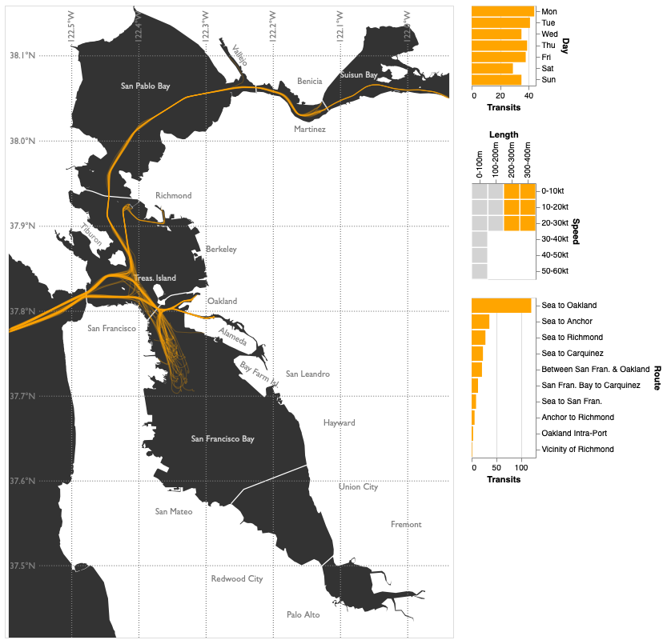

Greg Tozzi --- Project Portfolio
Data Scientist | Retiring Senior Military Officer | Active Clearance
Portfolio

Visualizing San Francisco Bay Vessel Traffic
Final project for Data Visualization (W209) taken as part of the UC Berkeley School of Information's Master of Information and Data Science (MIDS) program.
Toward Automated Celestial Navigation with Deep Learning
My final project for Deep Learning in the Cloud and at the Edge (W251) taken as part of the UC Berkeley School of Information's Master of Information and Data Science (MIDS) program.
Toward Automated Celestial Navigation with Deep Learning
My final project for Deep Learning in the Cloud and at the Edge (W251) taken as part of the UC Berkeley School of Information's Master of Information and Data Science (MIDS) program.
Toward Automated Celestial Navigation with Deep Learning
My final project for Deep Learning in the Cloud and at the Edge (W251) taken as part of the UC Berkeley School of Information's Master of Information and Data Science (MIDS) program.

Getting it Righter, Faster
In a report published by the Center for a New American Security, a leading Washington, DC-based security policy think tank, Dr. Kaythrn McNabb Cochran and I argued that effective prediction is the cornerstone of agile decision-making. We surved predictive methodologies available to policymakers and presented the results of our study conducted with Good Judgment, Inc. and the U.S. Department of State.